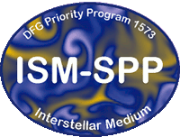

Highlight of the month
Introduction
The work group of Prof. Stefanie Walch-Gassner - Theoretical Astrophysics Cologne - was established in winter 2013. We specialise in computational astrophysics applied to the physics and gas dynamics of the interstellar medium. This includes the evolution of the multi-phase interstellar medium, the formation and evolution of molecular clouds, the formation of new stars within them and the associated evolution of protostellar and protoplanetary discs, which are the precursors of planet formation. Once new stars are born, we study the feedback from young and evolved massive stars in the form of ionizing radiation, stellar winds, and type II supernovae, which shape and disperse their parental molecular clouds and may regulate their star formation efficiency, and which can even drive galactic fountains and outflows.
We are heavily involved in the development and improvement of new numerical schemes, which are the necessary engines that drive our scientific progress. Our massively parallel simulations are carried out on the world’s larges supercomputers. Apart from magneto-hydrodynamics and gas self-gravity, we include chemical networks and radiative transfer. All of these physical processes require very different numerical schemes and the question of how to combine them in an efficient way is a problem we have to face every day.
Last but not least, every theory is grey without its connection and application to real life experiments. In astrophysics, experiments in the lab are usually not feasible, and so we compare with the fantastic multi-wavelength observational data, which is available to us via collegues and international collaborations. The art of producing “realistic” synthetic observations is a whole field of research on its own and we are investing a significant effort to put our theories to the test using mock observations of different tracers like CO, HI, and C$^+$, or continuum dust (polarization) maps.
Acknowledgments
This work is supported by| |
SFB 956 Cologne Bonn project C5 |
| ERC Starting Grant 679852 'The Radiative Interstellar Medium' | |
|  | The DFG Priority Programme 1573 'Physics of the ISM' |
| Leibniz-Rechenzentrum Garching | |
| Gauss Center for Supercomputing: Link to a short project description on the GCS site | |
| |
Max Planck Computing and Data Facility (MPCDF) |